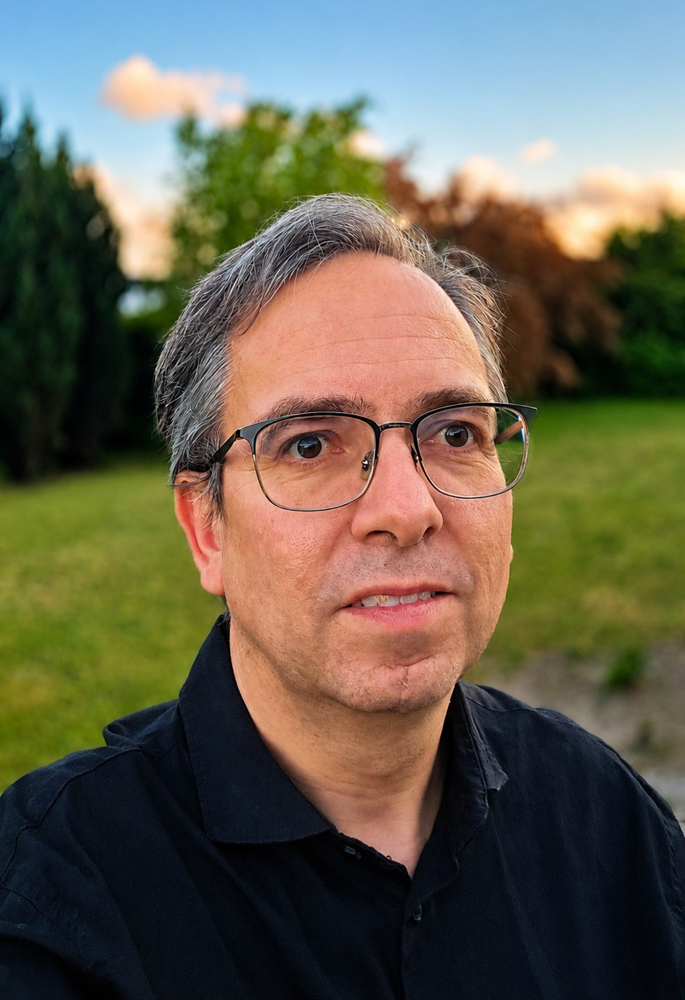

Da jeg gjorde comeback som dirigent
Et gensyn med Sankt Birgitta Skole blev også en påmindelse om, hvorfor trivsel, fællesskab og valgfrihed fortsat betyder så meget.
Inden jeg blev en del af bestyrelsen på Sankt Birgitta Skole, begyndte jeg som dirigent ved et par af skolens forældrekredsmøder. Sidste år valgte jeg selv at træde ud af bestyrelsen, og tirsdag aften gjorde jeg comeback som dirigent ved årets forældrekredsmøde.
Her kunne jeg konstatere, at det heldigvis stadig går rigtig godt på skolen, selv om den ligger i en kommune, hvor udviklingen i børnetallet er mere dyster læsning end aktiekurserne på Wall Street i 1929.

Selv om jeg selv er opvokset som en glad dreng i folkeskolen, tabte jeg mit hjerte til privatskoleverdenen, da jeg for alvor begyndte at interessere mig for den. Den ene skoleform er ikke mere rigtig end den anden, men valgfriheden for forældrene er vigtig.
I min tid i bestyrelsen stod elevernes trivsel højt på listen over de områder, jeg prioriterede. Det var naturligvis i årene efter coronapandemien og de udfordringer, den efterlod, men emnet bliver aldrig uaktuelt.
Mistrivsel blandt børn og unge fylder fortsat meget i medierne, og selv om langt de fleste heldigvis har det godt, må vi aldrig glemme dem, der har brug for en ekstra håndsrækning.
Derfor glæder det mig også at se, hvordan skolen fortsat arbejder med både faglighed og trivsel. Det ansvar ser jeg heldigvis mange privatskoler tage på sig rundt omkring i landet – og ikke mindst her på Lolland.
Tilbage til alle refleksioner.